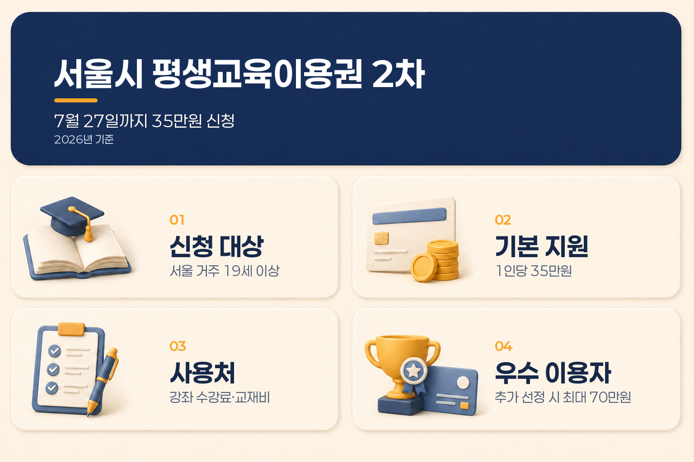

서울시 평생교육이용권 2차 신청, 7월 27일까지 35만원 지원 조건·신청방법 총정리
서울시가 2026년 평생교육이용권 2차 신청을 받고 있습니다. 신청 기간은 7월 9일 오전 10시부터 7월 27일 오후 6시까지입니다.
이번 2차 모집은 일반 이용권 기준으로 소득과 관계없이 주민등록상 서울시에 거주하는 만 19세 이상 성인이 신청할 수 있습니다. 선정되면 신청인 명의의 NH농협 채움카드에 최대 35만 원 포인트가 지급됩니다.
다만 신청만 하면 바로 지급되는 방식은 아닙니다. 모집 인원을 넘으면 기초생활수급자·차상위계층을 우선 선발한 뒤 남은 인원을 추첨하고, 일반·디지털·노인·장애인 유형 중복 신청도 불가능합니다.
이 글에서는 서울시 평생교육이용권 2차 모집의 대상, 유형 선택, 신청방법, 사용처, 선정 일정과 우수 이용자 추가지원 구조를 2026년 7월 19일 기준으로 정리합니다.
서울시 평생교육이용권 2차 핵심 내용
| 구분 | 2026년 2차 기준 |
|---|---|
| 신청 기간 | 2026년 7월 9일 10:00~7월 27일 18:00 |
| 일반 이용권 | 주민등록상 서울 거주 만 19세 이상 성인, 소득 기준 없음 |
| 디지털 이용권 | 서울 거주 만 30세 이상 디지털 평생교육 수요자 |
| 노인 이용권 | 서울 거주 만 65세 이상 |
| 장애인 이용권 | 서울 거주 만 19세 이상 등록장애인 |
| 지원 금액 | 1인당 최대 35만 원 |
| 지급 방식 | 신청인 명의 NH농협 채움카드 포인트 |
| 사용처 | 등록 평생교육기관의 강좌 수강료와 해당 강좌 교재비 |
| 선정 발표 | 2026년 8월 초 예정, 포털에는 8월 6일로 표시 |
| 사용 기한 | 2026년 12월 31일까지 |

서울시는 이번 2차 모집에서 일반 1,918명, 디지털 296명, 노인 148명, 장애인 156명 등 총 2,518명을 선정할 계획입니다.
이번 2차 모집은 누가 신청할 수 있나요?
평생교육이용권은 하나의 유형만 선택해 신청하는 구조입니다. 본인의 연령과 교육 목적에 맞는 유형을 먼저 확인하면 신청 화면에서 선택하기가 수월합니다.
| 유형 | 신청 대상 | 사용할 수 있는 교육 |
|---|---|---|
| 일반 이용권 | 주민등록상 서울 거주 만 19세 이상 성인 | 등록 평생교육기관 강좌 |
| 디지털 이용권 | 서울 거주 만 30세 이상 디지털 평생교육 수요자 | AI·디지털 관련 강좌 |
| 노인 이용권 | 서울 거주 만 65세 이상 | 등록 평생교육기관 강좌 |
| 장애인 이용권 | 서울 거주 만 19세 이상 등록장애인 | 등록 평생교육기관 강좌 |
일반 이용권은 이번 2차부터 소득 기준 없이 신청할 수 있습니다. 다만 ‘서울시민 누구나’라는 표현은 일반 이용권의 기본 자격을 설명하는 내용이고, 디지털·노인·장애인 이용권은 각 유형의 연령·자격 기준을 함께 봐야 합니다.
또한 이용권 유형 간 중복 신청과 중복 지원은 불가능합니다. 만 30세 이상이면서 디지털 교육을 원한다면 일반과 디지털 중 어떤 유형이 수강하려는 강좌에 맞는지 먼저 확인하는 편이 좋습니다.
35만 원은 현금이 아니라 교육비 포인트입니다
지원금은 현금으로 입금되는 방식이 아니라 신청인 명의의 NH농협 채움카드에 포인트로 지급됩니다. 기존 채움카드를 가지고 있다면 별도 카드 발급 없이 포인트가 충전될 수 있고, 카드가 없다면 선정 후 카드 발급 절차가 필요합니다.
사용 가능한 항목은 크게 두 가지입니다.
- 평생교육이용권 사용기관으로 등록된 기관의 강좌 수강료
- 해당 강좌를 수강하는 데 필요한 교재비
서울시 안내에 따르면 서울시와 다른 시·도 기관을 포함해 826개 등록 교육기관에서 사용할 수 있습니다. 다만 모든 학원이나 온라인 강좌에서 자동으로 사용할 수 있는 것은 아니므로, 결제 전 평생교육이용권 누리집의 사용기관 목록을 확인해야 합니다.
사용할 수 없는 항목도 확인하세요
평생교육이용권은 교육 목적의 카드 포인트입니다. 다음과 같은 항목은 결제 제한이 있을 수 있습니다.
| 사용 가능 범위 | 결제할 수 없는 대표 항목 |
|---|---|
| 등록기관 강좌 수강료 | 강좌 없이 교재만 단독 구매 |
| 해당 강좌에 필요한 교재비 | 유·무선 전자기기와 통신기기 |
| 온라인·오프라인 등록 강좌 | 재료비, 입회비, 가입비 |
| 본인이 직접 수강하는 교육 | 자격증 응시료·발급료, 검정료, 각종 수수료 |
사용 기간 안에 쓰지 않은 포인트는 이월되거나 현금으로 바꿀 수 없습니다. 수강하려는 강좌의 결제 가능 여부와 사용 기한을 함께 확인해야 합니다.
우수 이용자로 선정되면 최대 70만 원이라는 의미
평생교육이용권 공식 사업 안내에는 기본 35만 원과 우수 이용자 70만 원 지원이 함께 표시되어 있습니다. 이 금액은 처음 선정될 때 70만 원이 한 번에 지급된다는 의미로 이해하기보다, 기본 이용권에 추가 지원이 더해지는 구조로 보는 것이 정확합니다.
서울시가 2025년에 안내한 우수 이용자 기준을 보면 기존 이용자가 정해진 기한까지 기본 35만 원을 전액 사용한 뒤 별도 모집과 선정 절차를 거쳐 추가 35만 원을 재충전받는 방식이었습니다.
2026년 서울시 2차 신청 공고에서 현재 확정된 지원 내용은 1인당 최대 35만 원입니다. 2026년 우수 이용자 추가 모집 일정과 선정 기준은 별도 공고가 나오면 그 내용을 우선 확인해야 합니다.
따라서 신청 단계에서는 기본 35만 원을 받을 수 있는 2차 모집으로 이해하고, 이후 우수 이용자 추가지원 공고가 게시되는지 확인하는 순서가 안전합니다.
신청은 어디에서 어떻게 하나요?
공식 신청·안내 페이지는 아래 링크에서 바로 확인할 수 있습니다.
신청 경로는 이용권 유형에 따라 나뉩니다.
| 신청 유형 | 신청 경로 |
|---|---|
| 일반·디지털·노인 | 서울시 평생교육이용권 누리집 또는 모바일 웹 |
| 장애인 | 정부24 혜택알리미 또는 모바일 웹 |
온라인 신청 순서
- 본인에게 맞는 이용권 유형을 선택합니다.
- 유형별 공식 신청 페이지에 접속합니다.
- 약관에 동의하고 본인인증을 진행합니다.
- 주민등록상 서울 거주 여부와 신청 자격을 확인합니다.
- 신청서를 작성하고 이용자 서약을 진행합니다.
- 신청 완료 화면과 신청 내역을 확인합니다.
공고문에는 신청 완료 여부를 확인하지 않아 생기는 불이익은 신청인 책임이라고 안내되어 있습니다. 마지막 제출 버튼을 누른 뒤 접수 완료 문구나 신청 내역을 꼭 확인하는 것이 좋습니다.
선정 기준과 발표 일정
신청자가 모집 인원을 넘으면 자격 확인 후 우선순위에 따라 선정합니다. 기초생활수급자와 차상위계층을 우선 선발하고, 남은 인원은 무작위 추첨으로 선정하는 방식입니다.
이번 2차 모집은 유형별 정원이 정해져 있으므로 신청 자격을 갖췄더라도 자동 선정되는 것은 아닙니다. 서울시 공식 보도자료는 8월 초 결과 발표를 안내하고 있으며, 평생교육이용권 포털 모집 화면에는 2026년 8월 6일이 발표일로 표시되어 있습니다.
선정 결과는 평생교육이용권 누리집에서 확인하고 개별 문자로도 안내받을 수 있습니다. 선정 후에는 NH농협 채움카드 발급 또는 기존 카드 확인, 포인트 충전, 사용기관 조회 순서로 이어집니다.
신청 전에 확인할 체크리스트
- 2026년 7월 27일 18시 전 신청 가능한지 확인했습니다.
- 주민등록상 주소지가 서울시인지 확인했습니다.
- 일반·디지털·노인·장애인 중 신청할 유형을 하나로 정했습니다.
- 일반 이용권은 만 19세 이상, 디지털은 만 30세 이상, 노인은 만 65세 이상인지 확인했습니다.
- 장애인 이용권은 등록장애인 자격과 별도 신청 경로를 확인했습니다.
- 다른 이용권 유형과 중복 신청하지 않았습니다.
- 수강하려는 기관이 평생교육이용권 사용기관으로 등록되어 있는지 확인했습니다.
- 지원금이 현금이 아닌 NH농협 채움카드 포인트라는 점을 확인했습니다.
- 강좌 수강료와 해당 강좌 교재비 외 결제 제한 항목을 확인했습니다.
- 선정 후 2026년 12월 31일까지 사용할 계획을 세웠습니다.
- 우수 이용자 추가지원은 별도 공고와 선정 절차가 필요할 수 있음을 확인했습니다.
자주 묻는 질문
서울에 살면 누구나 35만 원을 바로 받을 수 있나요?
일반 이용권은 주민등록상 서울 거주 만 19세 이상이면 소득과 관계없이 신청할 수 있습니다. 다만 모집 인원을 초과하면 우선 선발과 추첨을 거치므로, 신청 자격과 최종 선정은 구분해야 합니다.
지원금은 현금으로 받을 수 있나요?
현금 지급이 아니라 신청인 명의의 NH농협 채움카드 포인트로 지급됩니다. 등록된 평생교육기관의 강좌 수강료와 해당 강좌 교재비에 사용할 수 있습니다.
70만 원을 한 번에 신청하면 되나요?
이번 2차 공고에서 확정된 기본 지원액은 35만 원입니다. 우수 이용자 추가지원은 기본 이용자의 사용 실적, 별도 모집과 선정 기준에 따라 운영되는 구조이므로 2026년 추가 공고를 확인해야 합니다.
만 30세 이상이면 일반과 디지털을 모두 신청할 수 있나요?
이용권 유형 간 중복 신청과 중복 지원은 불가능합니다. 일반 강좌를 들을지 AI·디지털 강좌를 들을지, 수강 목적에 맞는 유형 하나를 선택해야 합니다.
온라인 강의도 사용할 수 있나요?
온라인 강의도 평생교육이용권 사용기관으로 등록된 기관이라면 이용할 수 있습니다. 신청 전에 해당 기관과 강좌가 사용 대상인지 확인하세요.
마무리 정리
서울시 평생교육이용권 2차 신청은 2026년 7월 27일 오후 6시까지 진행됩니다. 일반 이용권은 이번 2차부터 소득 기준 없이 주민등록상 서울 거주 만 19세 이상 성인이 신청할 수 있고, 선정되면 최대 35만 원의 교육비 포인트를 받을 수 있습니다.
지원금은 강좌 수강료와 해당 강좌 교재비에 사용하는 카드 포인트이며, 이용권 유형별 신청 경로와 자격이 다릅니다. 신청자가 많으면 취약계층 우선 선발 후 추첨이 진행되므로 접수 완료 여부까지 확인해야 합니다.
공식 사업 안내에 있는 최대 70만 원은 기본 35만 원에 우수 이용자 추가지원이 더해지는 구조입니다. 2026년 서울시 2차 이용자는 기본 지원 35만 원을 먼저 기준으로 보고, 이후 우수 이용자 모집 공고가 나오면 추가 조건을 확인하면 됩니다.
자료 기준일: 2026년 7월 19일 주요 출처: 서울특별시 2026년 2차 모집 보도자료·공고, 서울시 평생교육이용권 누리집, 국가평생교육진흥원 평생교육이용권 사업 안내 안내: 이 글은 2026년 7월 19일 기준 서울시와 평생교육이용권 공식 안내를 바탕으로 정리한 일반 정보입니다. 신청 기간, 선정 기준, 우수 이용자 추가지원 여부와 사용처는 공고·운영 상황에 따라 달라질 수 있으므로 신청 전 서울시 평생교육이용권 누리집의 최신 공지를 다시 확인하세요.